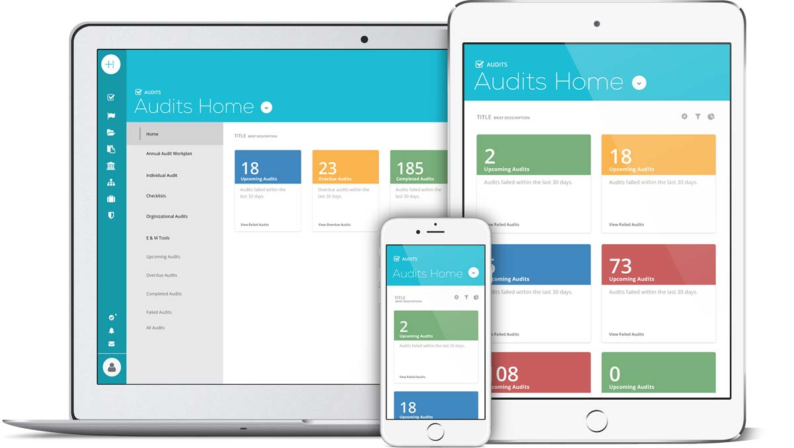

Introduction
Healthicity wanted to rebrand its 7Atlis web application and wanted to understand where any imporoments could be made to it's User Experience. When I started this project, the team was already behind schedule and had to have an updated application for a committed launch date four weeks out. There hadn't been any previous consideration for design and there had been no user testing to date.

Initial Design
Discovery
After interviewing the stakeholders and users, I worked with the team to create a list of KPIs and Goals that we thought was achievable for the project, given the extremely tight deadline.
Stakeholders
Primary stakeholders consisted of a Business Owner, VP of Marketing, and the President of Healthicity. All had differnet goals, and wants with the new applciation.
- Business Owner: "The application should ship before a tradeshow 4 weeks out"
- VP of Marketing: "The application must have more visual appeal and should promote the new Healthicity brand statement of "simplicity" while bringing the overall look of the application into the modern era.
- President: "We want to make sure we're imporoving the UX, but we can't go over budget."
User-Testing
There were three main user types, a Super Admin, Compliance Officer and Limited User. Each of these user types have different roles in the application and within their organizations.
On an initial customer satisfaction survey, we found that only 28% of users said that the dashboard provided additional value and only 36% said they were happy with their experience with the dashboard.
When following up with the user testing survey, the first thing I realized was that users weren't sure where to go in the application or what they needed to focus on. Other concerns were lack of historical data and not enough room on the screen to work.
Based on the discovery results and timeline, I decided to focus on the Dashboard portion of the applciation for the Initial release. I worked with the Stakeholders to set the following KPIs and Goals for the project.
KPI's and Goals
- The project must be completed on time
- Designs must be be responsive
- Final dashboard must increase overall customer satisfaction
- The product must include updated company branding
Design
Through multiple rounds of concept and user-testing we were able to land on a design that met the needs of our stakeholders and users. The project launched on time and met all of our stated goals and KPIs.
Task Mapping
I started out by compling a list of tasks the users were most likely to do on each of the dashboard pages and the most relevant information on that page and began there.
Sketching
After we began tracking results, I started sketching out ideas for the application. I tried to incorporate all of the lessons I learned from the user testing.
Wireframing
After reviewing the sketches with the product team, we decided to move forward with one of the designs. I put together a wire-frame that we began to review with a select number of users and key stakeholders.
Mockups
After multiple rounds of revisions with both the stakeholders and product team, we realized that developing graphs and charts in the application weren't going to be ready in time for launch, so we left them for another iteration of the dashboards. We selected a card based system for showing users what was important and color coding them to let the users know if there were any problems. We also gave them a clear call to action to help them learn what to do with the cards.
Interaction Design
Once a final visual design was decided on, I tested the design via a functioning html prototype with in-person user interviews. I tested final button and card states as well as what cards to show, the status colors on them and the call-to-action text for specific cards.
Delivery
The results were pretty spectacular and our users met the change with great enthusiasm. Within 30 days of launch we ran another customer satisfaction survey and found an increase of 45% with the dashboard pages. The users sited their main reason for the increase in satisfaction as being the the quick access to the areas of the application they needed. In addition, the project was completed on-time and met all branding standards for the company.
Final Design
Lessons Learned
If we would have had more communication between design and engineering throughout the process, we would have realized sooner that the time involved to create custom graphs was beyond the scope of the projects and we could have spent more time working on other aspects of the design. Because of this, I now review all prototypes, starting with sketches, with the engineers before moving forward.